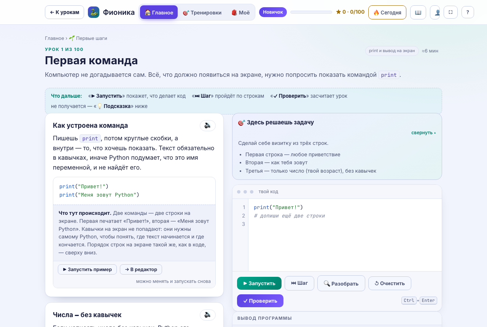
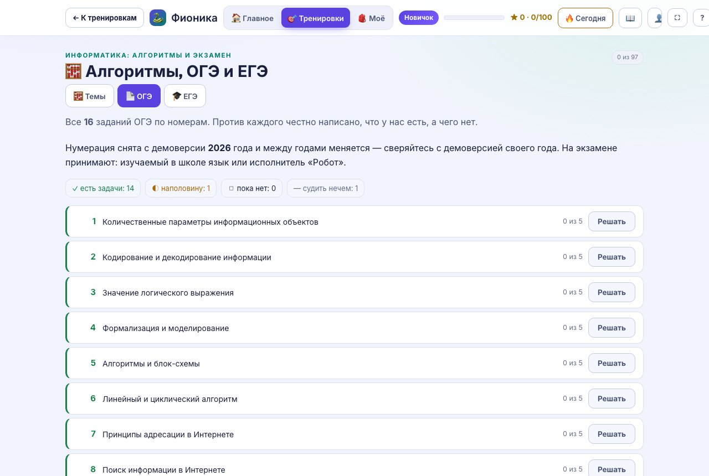
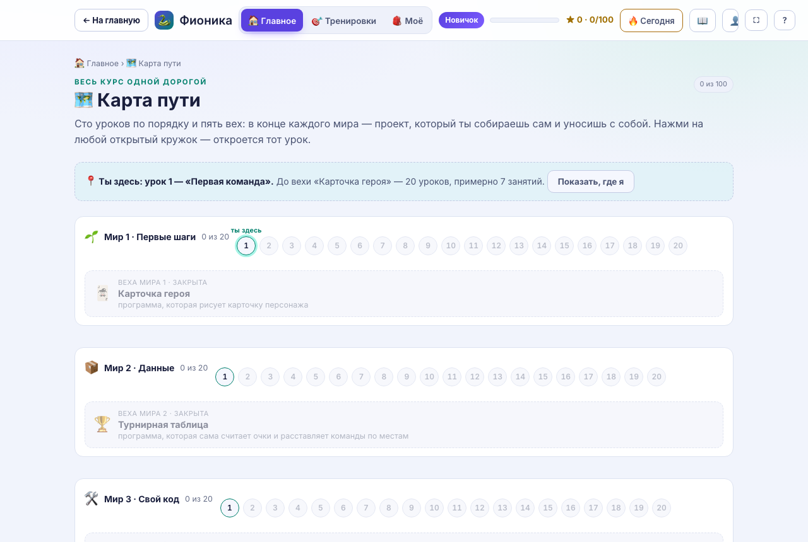
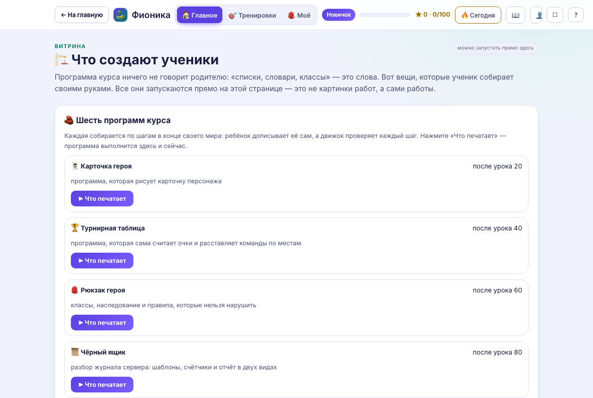

Информатика · 5–11 класс · ОГЭ и ЕГЭ
Ребёнок пишет код сам — а вы видите это без аккаунтов, звонков и рассрочек. Уроки Python прямо в браузере: ничего не устанавливать, имя спросим после первой задачи.
Аккаунтов нет ни у кого: взрослому хватает кода ученика.
Пишет программу сам. Подсказка объясняет, как думать, но решения за него не пишет.
Запускает программу по-настоящему и говорит словами, что не так и в какой строке.
По коду ученика: что пройдено, где было трудно, что набрано руками, а что вставлено.
Четыре настоящих экрана, а не макеты. Всё это открывается кнопкой выше.




Python знать не нужно: всё, что видит взрослый, объяснено словами.
После занятия — что прошли и где было тяжело. Карта показывает, когда ребёнок занимался на самом деле.
Задачи по нарастающей, без подсказок. Итог — короткий код, а через месяц видно «было → стало».
Вопросы по программе ребёнка: «что напечатает, если заменить число». Ответы посчитаны заранее — спрашиваете вы.
История работы: попытки, черновики, вставки. Не приговор детектора, а повод поговорить.
Бесплатно и независимо от того, где он учится: проверку проводит не тот, кто учит.
У нас, в школе программирования или с репетитором: задачи не привязаны к нашим урокам и идут по нарастающей — от счёта до классов.
Подсказок нет, решение пишет ребёнок. В итоге видно, какой код набран руками, а какой пришёл вставкой.
В конце короткий код: по нему итог откроется на телефоне взрослого. Регистрации нет, о ребёнке мы не храним ничего.
Через месяц пройдите снова и сравните два кода. Видно, какие темы закрылись за месяц, а какие нет.
Задания 15 и 16 ОГЭ получают балл по опубликованным критериям эксперта ФИПИ.
Программа запускается на скрытых тестах, как у эксперта, и получает 2, 1 или 0 баллов после каждой проверки.
Поле без края, как на экзамене: решение, которое годится только для рисунка, балла не получает.
Карта заданий по номерам: видно, какой номер закрыт, а какой просел.
Целиком, с часами и без подсказок. Репетитор задаёт один вариант всей группе коротким кодом.
Родители уходят из школ программирования за одним и тем же. Мы отвечаем на это устройством, а не словами.
Сейчас — бесплатно. Почему так: продукт ещё наполняется, и брать плату пока не за что.
Если доступ станет платным, условия опубликуют отдельно, и обратной силы у них не будет. Отказаться можно в любой момент, деньги за оставшийся оплаченный срок вернутся (условия, п. 3).
Звонить нам некуда: телефона мы не просим. Пакетов и рассрочек нет, а доступ сейчас бесплатный.
Пройдите с ним проверку «что умеет сам»: итог написан словами, а второй код через месяц покажет, что изменилось. В «Защите своего кода» вопросы приходят вместе с ответами.
Доказать это не может никто, и детекторам мы не верим. Видно другое: где код набран, а где вставлен, и может ли ребёнок ответить на вопрос о своей программе. Это повод поговорить, а не приговор.
Отказаться можно в любой момент, деньги за оставшийся оплаченный срок вернутся. Удержать можно только фактически понесённые расходы, и их состав назовут заранее — так записано в условиях, п. 3.
Ни телефона, ни почты, ни фамилии, ни класса. Имя остаётся на устройстве. Прогресс при синхронизации хранится под кодом ученика, а в коде имени нет. Подробно — в политике.
Курс рассчитан на 5–11 класс: первые уроки не требуют никакой подготовки — достаточно читать и набирать текст. Ребёнку младше проще всего проверить это делом: первая задача бесплатна и открывается без регистрации.
Это тренажёр, а не занятия: мы не обучаем, не аттестуем и балл не обещаем. Задачи в формате экзамена оцениваются по критериям эксперта ФИПИ, и видно, какие номера просели.
Код проверяет программа, живого преподавателя здесь нет. Если репетитор есть, он задаёт домашку и вариант и видит итог — страница для репетитора.